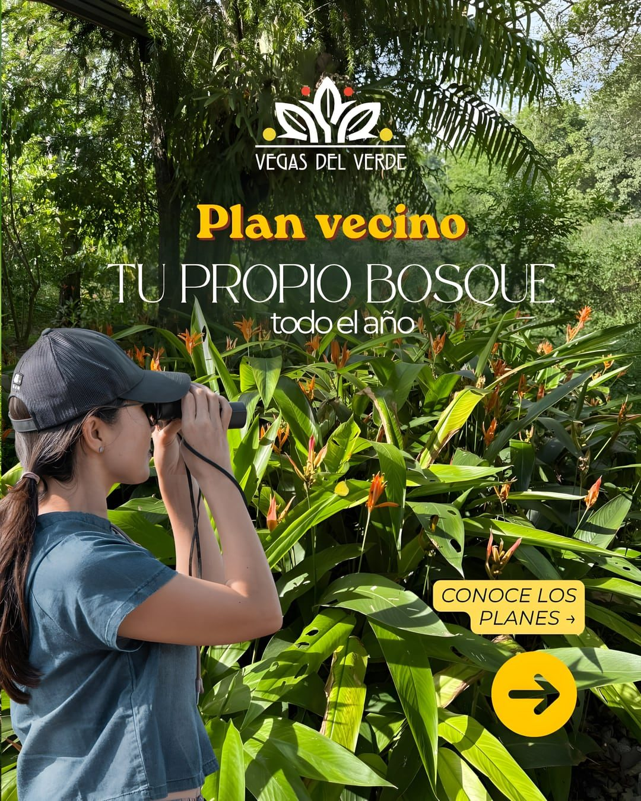
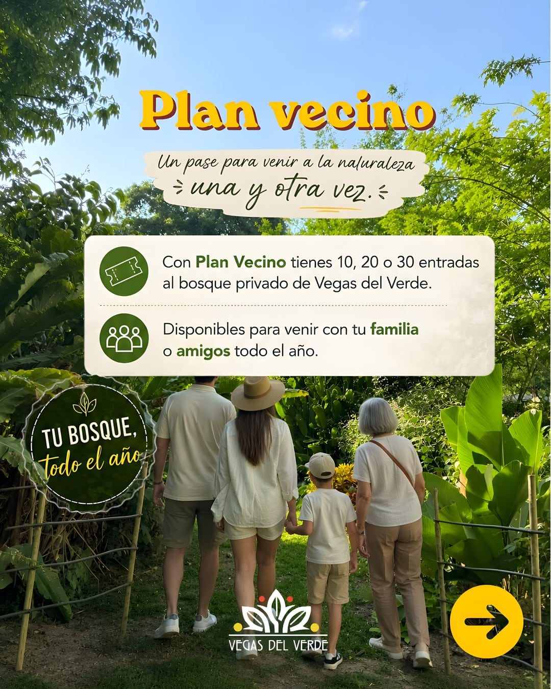
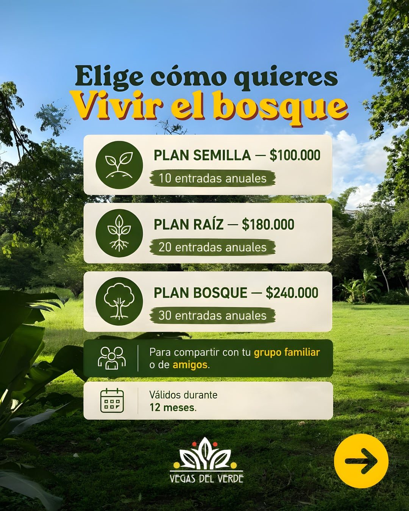
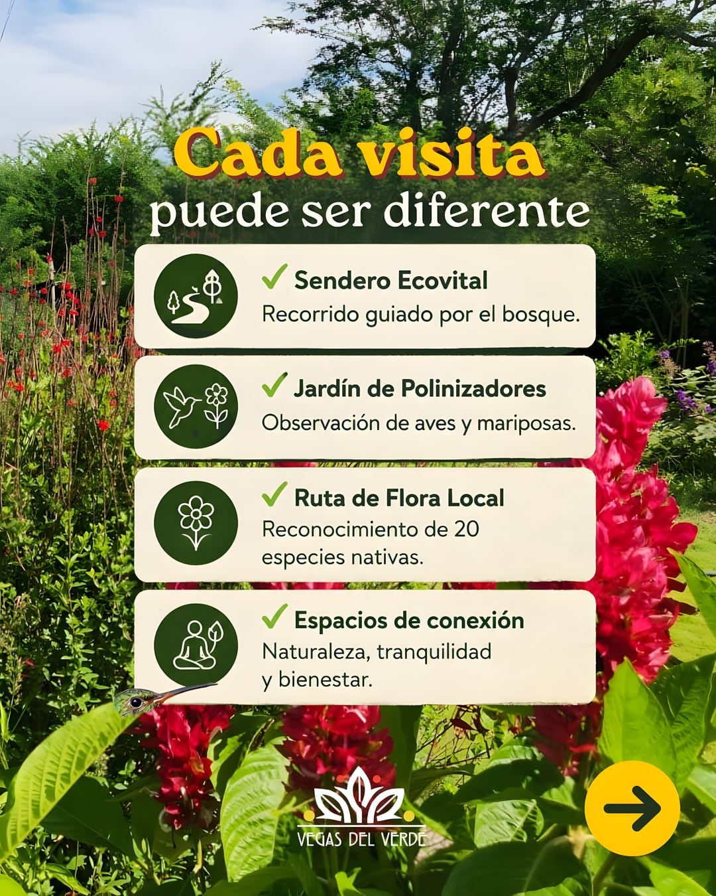
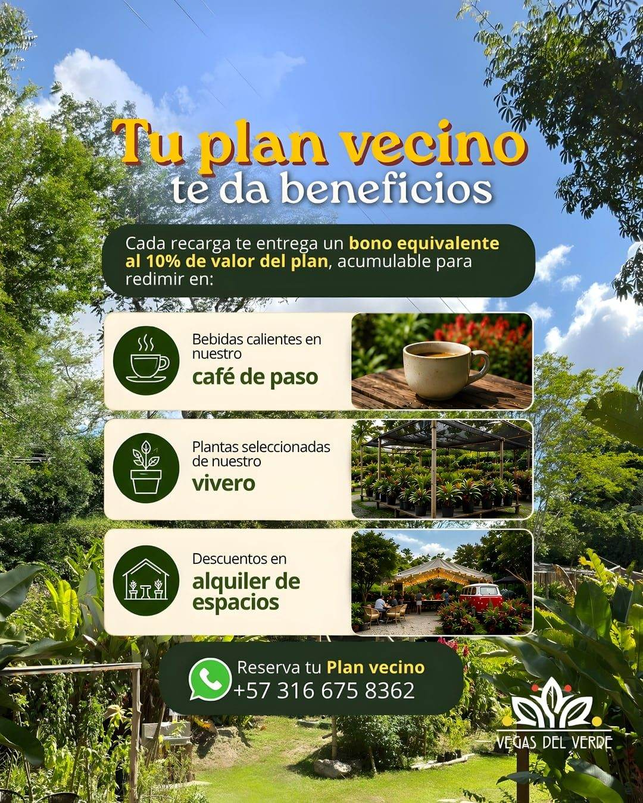

Plan Semilla — $100.000
10 entradas anuales


Con Plan Vecino tienes 10, 20 o 30 entradas
al bosque privado de Vegas del Verde.
Disponibles para venir con tu familia
o amigos todo el año.

10 entradas anuales
20 entradas anuales
30 entradas anuales
Para compartir con tu grupo familiar
o de amigos.
Válidos durante
12 meses.

Recorrido guiado por el bosque.
Observación de aves y mariposas.
Reconocimiento de 20
especies nativas.
Naturaleza, tranquilidad
y bienestar.

Cada recarga te entrega un bono equivalente
al 10% del valor del plan, acumulable para
redimir en:
Bebidas calientes en nuestro café de paso
Plantas seleccionadas de nuestro vivero
Descuentos en alquiler de espacios